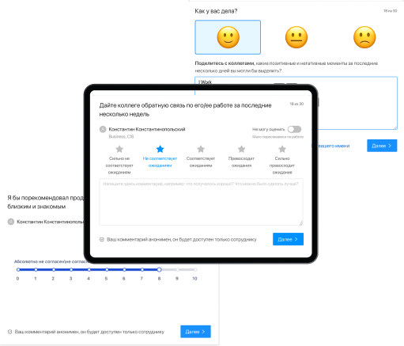

для современного HR-РУКОВОДИТЕЛЯ
104 вопроса для комплексной
оценки ваших сотрудников
- Оцените вовлечённость и выгорание ваших сотрудников
- Узнайте сильные и слабые стороны коллектива
- Структурируйте обратную связь для повышения
эффективности бизнеса
Как отслеживать выгорание?

30 секунд
1 раз
в неделю
1 раз
в неделю